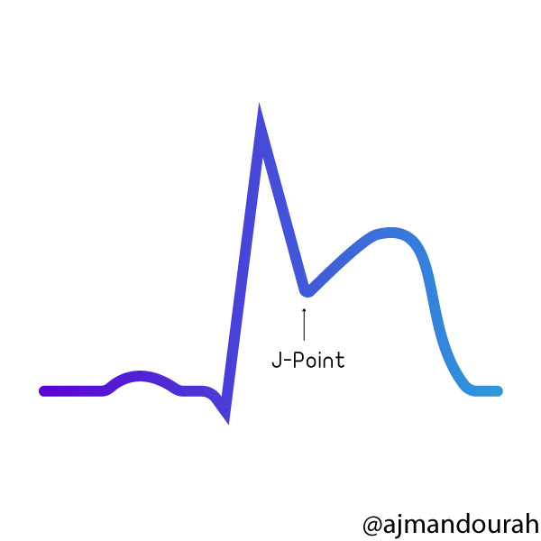
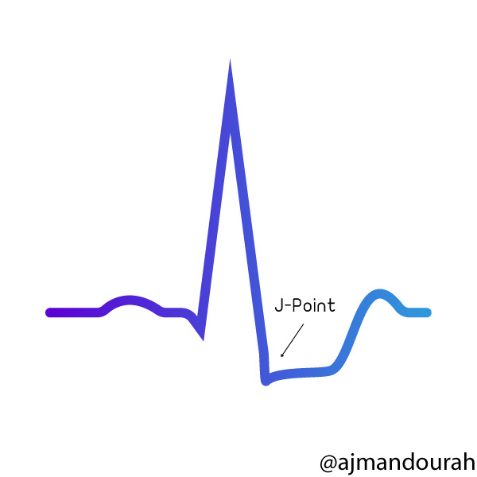

ecgbásico
Guía ECG
Conceptos Básicos sobre Electrocardiografía
P, Q, R, S, T
Hay otras ondas que también pueden aparecer que discutiremos más adelante.P La onda P es la primer onda del ciclo cardíaco. Representa la "despolarización de las aurículas". Está compuesta por la superposición de la actividad eléctrica de ambas aurículas.
Su parte inicial corresponde a la despolarización de la aurícula derecha y su parte final a la de la aurícula izquierda.
La duración normal de la onda P es menor de 0,10 s (2,5 mm de ancho) y un voltaje máximo de 0,25 mV (2,5 mm de alto).
Cuando es generada por el Nodo Sinusal es positiva en todas las derivaciones, excepto en aVR donde es negativa y en V1 que debe ser isodifásica.
En los crecimientos auriculares la onda P puede aumentar en altura o en duración y está ausente en la Fibrilación Auricular.
V1QRS تدل على تفعيل البطينين.
في التخطيط الطبيعي لا تزيد مدتها عن ١٢٠ ملي ثانية. من المهم الأخذ في الاعتبار أنه قد لا تكون
جميع هذه الموجات ظاهرة في التخطيط. Q دائما
سالبة و R دائما موجبة و S سالبة. ان لم توجد أي موجة سالبة بعد ال P فاعتبر هذه الموجة إذاً R
و ما يليها يكون S إذا كانت سالبة.T تدل على ارتخاء البطين Repolaraization
. في الإنسان الطبيعي تكون هذه الموجة موجبة.الموجات الأساسية في التخطيط
| الالكترودات | القسم الذي تمثله |
|---|---|
II, III, AVF |
Inferior |
I, aVL, V5, V6 |
Lateral |
V3, V4 |
Anterior |
V1, V2 |
Septal |
PQ، وهي المسافة التي
تستغرقها النبضة الكهربية حتى تنتقل خلال ال AV node و منها للبطينين. من المفترض أن لا تزيد هذه
المسافة عن ٢٠٠ ملي ثانية. زيادتها تدل على وجود AV block من النوع الأول. سنتطرق لانواعه لاحقا.QRS كما ذكرت فيما سبق أن هذه المسافة ينبغي أن لا تزيد عن ١٢٠ ملي ثانية.
زيادتها عن هذا الحد يدل على وجود Block في أحد فروع ال bundle وفي هذه الحالة ما يعرف ب
Left/Right bundle branch block. وسنتطرق للأنواع لاحقا.QT يتم حسابها بشكل يدوي من التخطيط إضافة لحسابها بلوغاريتمية تصحيحية تعرف
ب QTc ذلك لأنها قد تتأثر بمدى سرعة نبضات القلب. زيادة هذه المسافة تزيد من احتمالية
الإصابة بالاضطرابات القلبية البطينيه الخطيرة VT.RR تقيس المسافة بين كل QRS لحساب معدل ضربات القلب. من المهم
معرفة إذا ما كانت كل مسافات ال RR متساوية ام لا لتشخيص بعض اضطرابات كهرباء القلب
مثل ما يعرف بالرجفان الأذيني Atrial Fibrillation.PP تقيس مسافة النبضات الاذينية لمعرفة وجود أي نوع من انواع ال Block في
البؤرة الأذينية البطينية AV node.بعض المسافات المهمة في التخطيط
مسار انتقال الشحنات الكهربائية في القلب
QRS تزيد مسافتها عن ١٢٠ ملي ثانية. في سرعة
٥٠ مم بالثانية المربع الكبير يساوي ١٠٠ ملي ثانية و في سرعة ٢٥ مم بالثانية المربع الكبير يساوي
٢٠٠ ملي ثانية. QRS و موجة T في الالكترود V1
و V6 يمكنك التفريق بشكل سهل بين الاثنين.QRS تزيد مسافتها عن ١٢٠ ملي ثانية ووجدت R موجبة إضافة إلى
T سالبة في V1 فهذا يدل على Right Bundle branch block ، و بالعكس أن
تمت ملاحظة هذه التغيرات في V6 فهذا يدل على Left Bundle branch block.M shape, في ال QRS. المقصود هنا وجود
موجة R زائدة تعرف ب R' تدل على وجود نوع من عدم التناسق في التفعيل
الكهربي للبطينين؛ أي وجود توقف في احد المسارات الكهربائية المؤدية للبطين. شخصياً وجدت تطبيقها
صعبا في التخطيط حيث ان كثيراً من المرضى تصعب ملاحظة هذه الموجة الزائدة لديهم. و النظر بشكل عام
على ال R الأصلية إضافة إلى موجة T يسهل التشخيص.QRS بعرض أكبر من 120 مل ثانية + R موجبة + T سالبة
QRS بعرض أكبر من 120 مل ثانية + R سالبة + T موجبة
S-T و يعرف ب
STEMI أو ST elevation myocardial infarction و الأخر يصاحبه اما انخفاض في ST أو تغيرات
تطرأ على موجة T ويعرف ب NSTEMI أو Non ST elevation myocardial infarction. كلا النوعين
مهم لكن الأول (STEMI) يعتبر من الحالات الحرجة حيث أن التدخل الطبي العاجل واجب خلال نافذة زمنية تقدر
ب ١٢٠ دقيقة من التشخيص.ST. لعل من أهمها وجود Bundle branch block بأنواعه إضافةً إذا ماكان المريض لديه جهاز
تنظيم ضربات القلب pacemaker و كون المنظم مبرمجاً ليفعل البطين. لكن توجد هناك بعض الطرق لتسهيل
التشخيص نوعاً ما لعل من أشهرها طريقة Sgarbossa.| STEMI | NSTEMI |
|---|---|
| انسداد كامل في أحد الشرايين التاجية | انسداد جزئي في أحد الشرايين التاجية |
|  |  |
ارتفاع افقي في المسافة ST |
انخفاض افقي في المسافة ST |
| يصاحبه ارتفاع في انزيمات القلب | يصاحبه ارتفاع في انزيمات القلب |
ST في الالكترود V2-V3
بمقدار لا يزيد عن ١-٢ مم.ST ارتفاعاً باثولوجي , أي أنه قد يدل
على المرض , يجب أن يكون الارتفاع في الكترودين متتاليين في التخطيط.II, III, AVF تدلنا على المنطقة السفلى من القلب inferior ووجود ارتفاع ST
هنالك يدل على وجود احتشاء في هذه المنطقة.ST انخفاضاً في ال ST في
المنطقة المقابلة لهذا الالكترود.J point هي نقطة التقاء ال QRS بخط ال ST. في تشخيص حالات
الاحتشاء نقوم باستخدام ال J point كمقياس لمدى ارتفاع ST و نقوم بمقارنتها
بخط الاستواء الكهربي Isoelectrical line الذي يكون بالعادة في نفس مستوى مسافة T-P.Q كمقياس لخط الاستواء الكهربي.V2 , V3، أي ارتفاع في ال ST يزيد عن ١ مم في الكترودين متتاليين
أو أكثر يرجح الكفة لتشخيص الاحتشاء القلبي.V2 , V3 بارتفاع يزيد عن ٢ مم (١,٥ مم في الإناث) يعتبر باثولوجي أن وجد في
الكترودين متتاليين أو أكثر. بالنسبة للبالغين الذكور دون ٤٠ سنة فالحد هنا هو ٢,٥ ممST في الالكترودين V1 , V2 قد يكون دلالة على ارتفاع في ال
ST في المنطقة الخلفية للقلب حيث لا نقوم بالعادة بقياس التخطيط من تلك المنطقة. في هذه
الحالة يحبذ أخذ تخطيط خلفي أيضا بالكترودين أو ثلاثة لاستبعاد احتمالية وجود احتشاء في تلك المنطقة.Q في التخطيط بعمق أكبر من 2 مم او بعمق أكبر من ٢٥% من ارتفاع QRS
يدل على وجود احتشاء قديم خصوصا أن تمت ملاحظته في موضعين متتاليين في التخطيط. لكن وجودها في تخطيط
إضافة إلى وجود ارتفاع في ال ST يرجح بشدة وجود احتشاء جديد إضافة انه يزيد من خطورة
Prognosis للمرض.ST في اغلب أجزاء التخطيط مع وجود الأعراض يرجح وجود انسداد في أكثر
من شريان تاجي.ST segment elevation
ST.ST اضافة الى موجة T مرتفعة مقارنة بال QRS
.نمط دي وينتر في الانسداد الكامل للشريان LAD
T سالبة عميقة في الالكترودين V1, V2 . او تكون
موجة T موجبة في بدايتها و سالبة في نهايتها اضافة لكونها عميقة.النمط الأول من علامة ويلن حيث يلاحظ موجة T عميقة
النمط الثاني من علامة ويلن حيث يلاحظ موجة T تكون في بداياتها موجبة ثم سالبة
T اللتي تكون سالبة
لديهم في بعض أجزاء التخطيط مع نوع من الارتفاع أو الانخفاض في منطقة ST مما يجعل تشخيص
الارتفاع أو الانخفاض في هذه المنطقة صعبا. QRS موجبة و ارتفعت ال ST عند نقطة J أكثر
من ١ مم QRS سالبة و انخفضت ال ST عند ال J
بأكثر من ١ ممQRS موجبة و ST سالبة و بالعكس أكثر من
٥ مم. ST عند نقطة J أو
موجة T سالبة في أكثر من موضع في التخطيط. ST segment depression
ST في كل أجزاء التخطيط. ST مميز أيضا حيث يمكن تشبيهه بحبل ممسوك من طرفيه و تم ارخائه قليلاً.
PR يلاحظ في بعض المرضى.R. تعرف هذه الظاهرة ب Electrical
alternans. الشكل المميز لتخطيط التهاب غشاء عضلة القلب. لاحظ شكل الحبل المرخي المشار اليه بالسهم
T سالبة في اغلب أجزاء التخطيط. P في التخطيط. RR بين كل نبضة و أخرى (Irregularly irregular). الرجفان الأذيني. لاحظ عدم وجود موجة P اضافة لعدم تساوي المسافات بين كل QRS.
QRS تشبه في شكلها اسنان
المنشار. إذا كانت أسنان المنشار متجهة للاسفل في الالكترودات السفلية من التخطيط أي II ,III, AVF
فيكون نوع الرفرفة الاذينية عكس عقارب الساعة Counter clockwise و العكس صحيح.الرفرفة الأذينية. لاحظ شكل أسنان المنشار بين كل QRS.
P قبل كل QRS . كلما زادت سرعة معدل ضربات القلب صعبت
ملاحظة ال P حيث انها قد تكون مختفية تحت موجة T.R-R متساوية.P و حتى يتم التفريق ما بين Sinus tachycardia
وغيرها من الاضطرابات الكهربية يمكن عمل نوع خاص من التخطيط يعرف بالتخطيط القلبي البلعومي Esophageal
ECG لمعرفة موضع موجة P .من الممكن ملاحظ موجة ال P بعد كل موجة T.
P مقارنة بالموجات الطبيعية الصادرة
من SA node.QRS بعرض طبيعي أي أقل من ١٢٠ ملي ثانية.P سالبة في كل أجزاء التخطيط و صاحب هذا التغير تسارعاً في ضربات
القلب اذا نستنتج ان مصدرها هو من الاذين.وجود موجة P غريبة الشكل في نظم متسارع مقارنة بموجات P الاخرى في النظم الطبيعي في نفس التخطيط يرجح التشخيص.
P يمكن مشاهدتها بعد ال QRS .P بعد ال QRS لذا ينبغى في بعض الاحيان عمل
تخطيط قلبي بلعومي للتأكد من مكان ال P بعد ال QRS.لاحظ وجود نتوء سلبي بعد كل QRS.
QRS اقل من ١٢٠ ملي ثانية.QRS
طبيعية العرض اضافة لعدم وجودة اي علاقة ما بين موجات P و QRS في التخطيط .
نمط junctional في حالة 3rd degree AV Block. لاحظ عدم وجود علاقة ما بين موجات P و QRS.
QRS اكبر من
١٢٠ ملي ثانية.QRS
اكبر من ١٢٠ مم اضافة لعدم وجودة اي علاقة ما بين موجات P و QRS في التخطيط
.نمط ventricular في حالة 3rd degree AV Block. لاحظ عدم وجود علاقة ما بين موجات P و QRS.
QRS طبيعية و غير عريضة أي اقل من ١٢٠ ملي ثانية.T في النبضة السابقة قد
يحصل هناك توقف عن ارسال الشحنات في المسار الأيمن Right bundle branch بسبب انها لا تزال في ال
Refractory Period و ينتج ان يكون شكل ال QRS اعرض من الطبيعي بشكل RBBB.T في النبضة السابقة قد يحصل هناك توقف عن
ارسال الشحنات في كلا المسارين Right /left bundle branches مما يؤدي لعدم مرور النبضة للبطين، و ينتج
أن يكون فيما بعدها توقف لحظي عن ارسال الشحنات .نبضة أذينية زائدة. لاحظ وجود موجة P قبل النبضة الزائدة والتي قد يكون شكلها مختلفا عن موجة P الطبيعية.
QRS عريضة أي اكبر من
١٢٠ مم.نبضة بطينية زائدة. لاحظ عدم وجود P قبل الQRS اضافة الى عرض مسافة QRS مقارنة بالطبيعة.
QRS يكون أكبر من ١٢٠ ملي ثانية. 
QRS en el registro. {kind=link}
{kind=link}